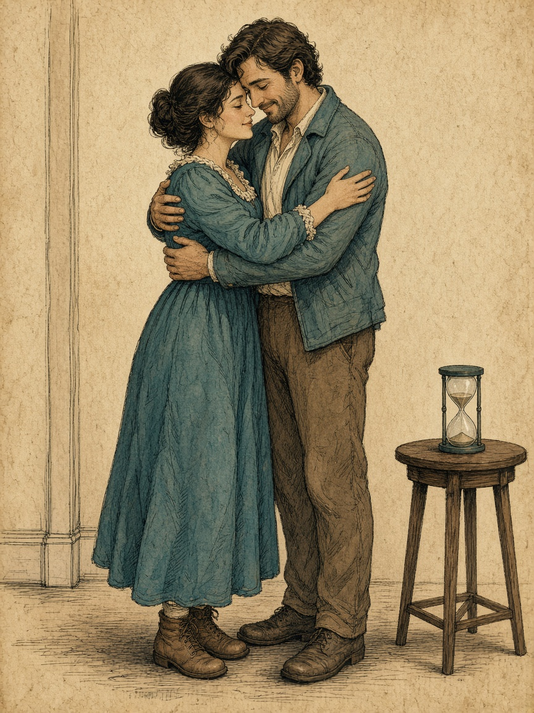

Part 03 · Closeness
The Science and Experience of Closeness
One embrace, errand set down, only while it stays comfortable. Sixty seconds is a proposal, not a dose.
A second minute only if both of you ask after you have stepped apart.
This stays nonsexual. Name desire and leave it. Do not hug toward a truce. Every second can be declined.
Stopping before contact completes the session. Skip illness, heat, or a fight still open.